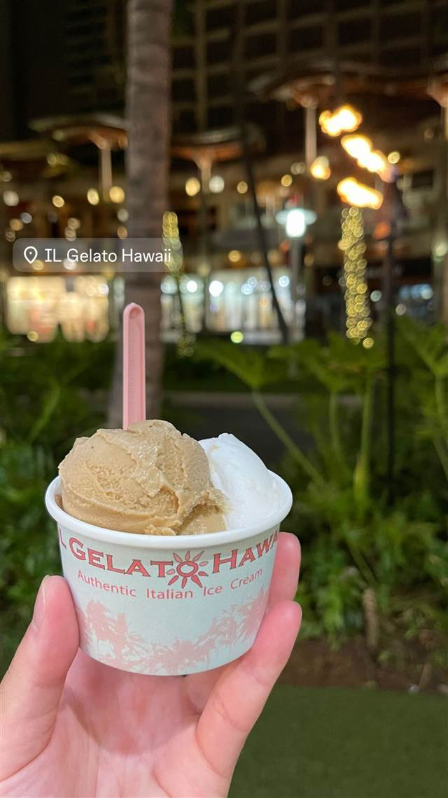
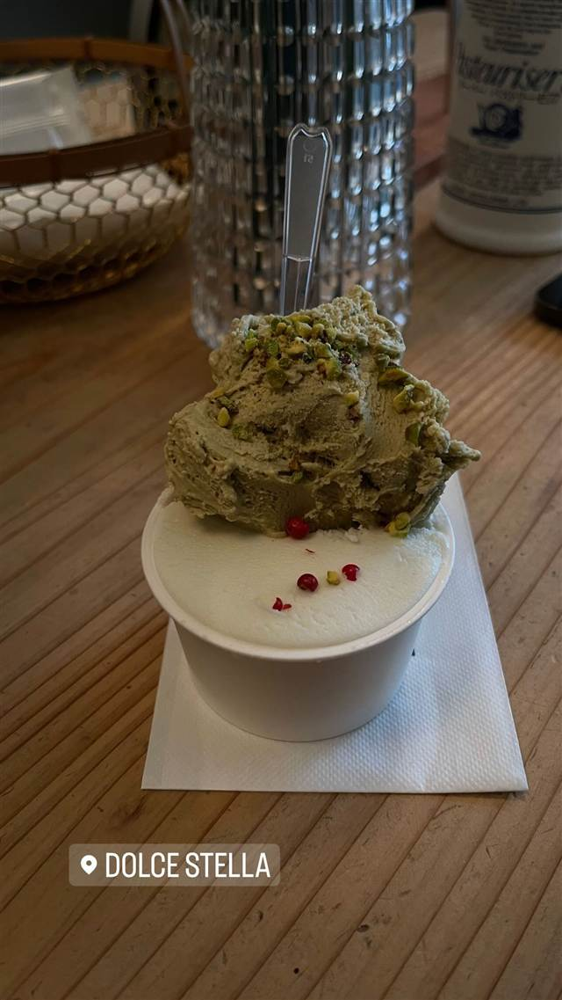

スイーツ · アイス・ジェラート · カハラ
IL Gelato Cafe Kahala
物理化学の博士が仕込む麺に見立てたスパゲッティジェラート
IL Gelato Hawaii
WHY GO
麺に見立てて盛り付ける名物スパゲッティジェラートを創業者が独自開発した
ハワイ大学で博士号を取得したドイツ出身のディルク・コッペンカストロプ氏が、イタリアでジェラート製法を学び2010年に創業。カハラモールの店舗では人工添加物を使わず毎日手作りするジェラートが評判で、麺に見立てて盛り付ける「スパゲッティジェラート」が名物。
TRIVIA
豆知識
- 創業者は物理化学の博士号を持つドイツ出身の元研究者
- 名物はスパゲッティの見た目に仕立てた「スパゲッティジェラート」
- 保有するレシピは150種類以上
REVIEWS
世間の評判
3.03食べログ
あっさり系ジェラートと落ち着いた雰囲気
- こってり系のアイスに比べると甘さ控えめであっさりした味わいという声が多い
- カハラモール中央の噴水近くで落ち着いて休憩できるという声が複数ある
- 濃厚な味のアイスクリームを好む人にはやや物足りないと感じる声もある
食べログ 口コミ6件
| 創業 | 2010年会社設立、2013年にカハラモール実店舗をオープン |
|---|---|
| 看板 | ジェラート（スパゲッティ状に盛り付ける「スパゲッティジェラート」など） |
| こだわり | 人工着色料・保存料を使わず、毎日手作りでジェラートを仕込む。150種以上のレシピを開発済み。 |
| 掲載・評価 | 創業者は2014年世界ジェラートチャンピオンシップに出場。 |
| どこから | 海外 |
| 場所 | カハラ 米国ハワイ州ホノルル 4211 Waialae Ave（Kahala Mall内） |
| メモ | カハラモール内のジェラート専門店。ハレイワにも姉妹店あり。 |
食べたもの：ジェラート
NEARBY
近い店・同じ系統の店
-
 アイス・ジェラート 中目黒駅
Premarché Gelateria Tokyo 中目黒駅前店
常時30〜40種、半数近くがヴィーガンの国際受賞ジェラート
昼 ～¥999 夜 ～¥999
アイス・ジェラート 中目黒駅
Premarché Gelateria Tokyo 中目黒駅前店
常時30〜40種、半数近くがヴィーガンの国際受賞ジェラート
昼 ～¥999 夜 ～¥999
-
 アイス・ジェラート 恵比寿
JAPANESE ICE OUCA（ジャパニーズアイス櫻花）恵比寿本店
宇治田原産の最高級抹茶を使う和素材のアイスクリーム
昼 ～¥999 夜 ～¥999
アイス・ジェラート 恵比寿
JAPANESE ICE OUCA（ジャパニーズアイス櫻花）恵比寿本店
宇治田原産の最高級抹茶を使う和素材のアイスクリーム
昼 ～¥999 夜 ～¥999
-
 アイス・ジェラート JR小樽駅
山中牧場 小樽店
100％乳製品を3日熟成させた牛乳ソフトクリーム
昼 ～¥999 夜 ～¥999
アイス・ジェラート JR小樽駅
山中牧場 小樽店
100％乳製品を3日熟成させた牛乳ソフトクリーム
昼 ～¥999 夜 ～¥999
-
 アイス・ジェラート 熱海駅
熱海プリン（本店）
熱海温泉の源泉水を使いじっくり蒸し上げる土地由来のプリン
昼 ～¥999 夜 ～¥999
アイス・ジェラート 熱海駅
熱海プリン（本店）
熱海温泉の源泉水を使いじっくり蒸し上げる土地由来のプリン
昼 ～¥999 夜 ～¥999
-

アイス・ジェラート DOLCE STELLA -
 アイス・ジェラート 表参道駅
ERIC ROSE
ハワイの人気カフェが開いた日本1号店のパンケーキ
昼 ¥2,000～¥2,999 夜 ¥2,000～¥2,999
アイス・ジェラート 表参道駅
ERIC ROSE
ハワイの人気カフェが開いた日本1号店のパンケーキ
昼 ¥2,000～¥2,999 夜 ¥2,000～¥2,999